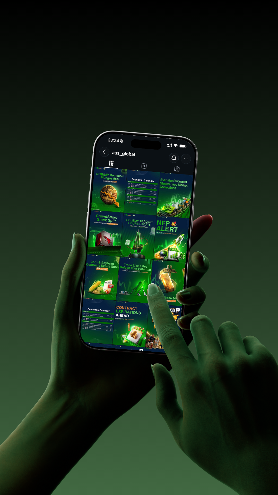
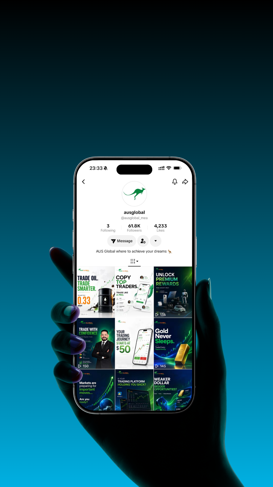
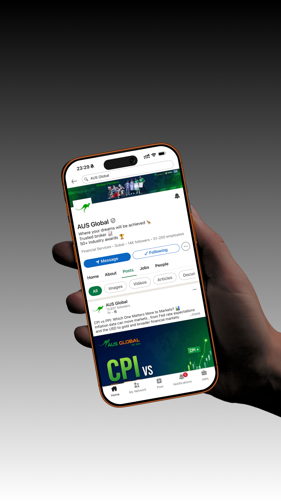

Owning the day-to-day content strategy and design for a fintech brand's social media presence, reaching an audience of several thousand followers.
Content Strategy · Social Media Design · Art Direction — Ongoing



Beyond one-off campaigns, I own the daily content strategy and visual output for a multinational fintech group's social presence across several social media platforms. The job isn't just design; it's deciding what gets published, when, and why: trading-related news, market-moving stories, company announcements, and daily economic calendar updates, each shaped to fit a different platform's audience and format.
Every day starts with the same question: what's actually relevant to our audience right now? I track market-moving news and translate it into content that's fast to read and easy to act on: economic calendar highlights, breaking trading news, and company updates, each designed to match how people actually scroll on different platforms.
I build every asset in Canva, Photoshop, and Illustrator, adapting the same core message across formats: sharp and visual for some, fast and native for others, more measured and professional elsewhere, all without ever losing brand consistency along the way.
A consistent daily content operation that keeps the brand visible, relevant, and on-message across multiple platforms, built entirely around real-time market activity rather than a fixed content calendar. It's taught me to think like both a designer and a publisher: content has to look right, but it also has to land at the right moment.